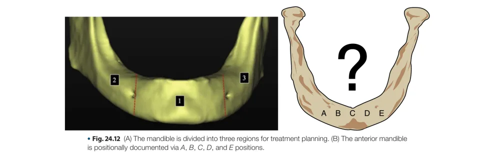
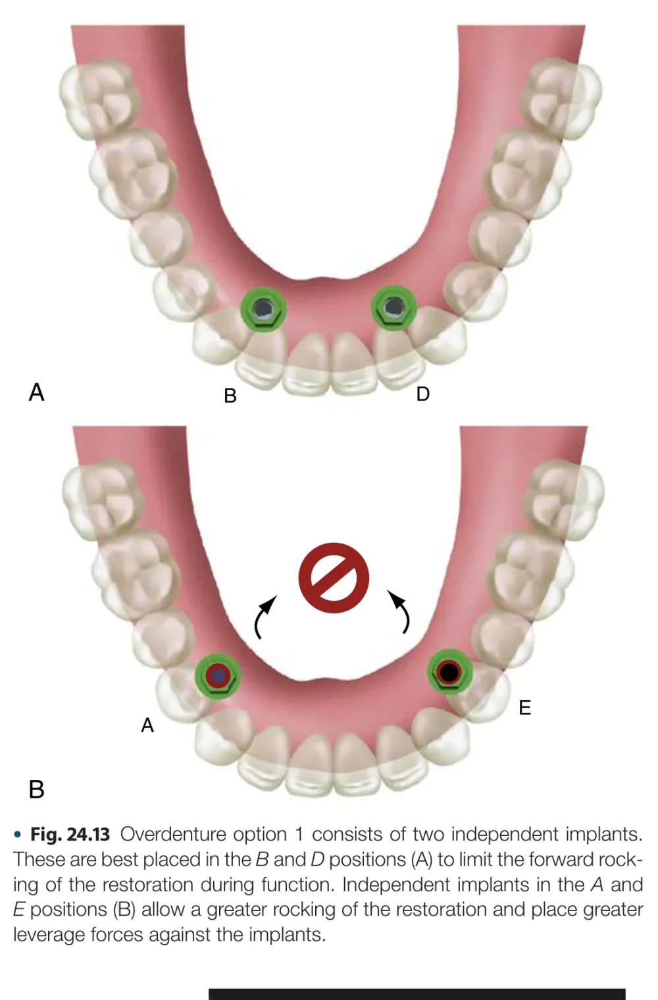
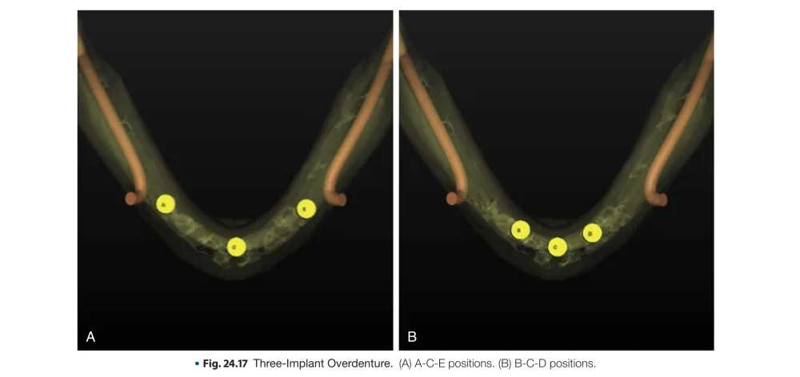

نسخه استخراجشده؛ ترجمه یا تأیید علمی انجام نشده است. وضعیت: captured
نخست نقشه. برای طرح درمان، مندیبل را به سه ناحیه تقسیم میکند: (۱) مندیبل قدامی، (۲) خلفی راست، (۳) خلفی چپ.
و سپس استخوان موجود در مندیبل قدامی به پنج ستون مساوی تقسیم میشود که جایگاههای بالقوهی ایمپلنتاند و با حروف A، B، C، D و E برچسب میخورند — از سمت راست بیمار شروع میشود.
و یک قاعدهی عملی که اغلب نادیده گرفته میشود: «صرفنظر از اینکه کدام گزینهی درمانی به کار میرود، هر پنج جایگاه ایمپلنت در زمان طرح درمان و جراحی نقشهبرداری میشوند.» — یعنی حتی وقتی دو ایمپلنت میگذاری، هر پنج جایگاه را علامت میزنی. این کار ارتقای آینده را ممکن نگه میدارد.
گزینهی اوردنچر ۱ (OD-1): دو ایمپلنت مستقل.
و بلافاصله نخستین تصمیم موقعیتی: این دو بهتر است در جایگاه B و D قرار گیرند.
چرا نه A و E؟ چون ایمپلنتهای مستقل در A و E اجازهی راکینگ بیشتر ترمیم میدهند و نیروهای اهرمی بزرگتری بر ایمپلنتها وارد میکنند. و یک نکتهی دوم: در موقعیت A و E، اتچمنت ممکن است به فضای زبان تجاوز کند و ناچار شوی آکریلیک را بیش از حد کانتور بدهی.
مزیت اصلی OD-1 هزینه است. و یک مزیت عملی هم دارد: «ترمیم موجود اغلب میتواند با یک ریبیس و پیکاپ داخلدهانی گرداگرد ایمپلنتها و اتچمنتها سازگار شود.»
و یک اندیکاسیون آناتومیک دیگر برای OD-1: «وقتی شکل قوس بهطور چشمگیری مخروطی باشد، بهگونهای که یک بار متصلکننده بیش از حد به سمت فاسیال کانتیلور شود یا اگر بیش از حد لینگوال باشد با تکلم و جویدن تداخل کند.» — یعنی گاهی دلیل نگذاشتن بار، بیومکانیک نیست بلکه جای فیزیکی نبودن است.
و اگر بهجای اتچمنت مستقل، دو ایمپلنت را با یک بار به هم وصل کنی؟
یک قاعدهی صریح: «بار نباید از سمت دیستالِ ایمپلنتها کانتیلور شود.»
و دلیلش دو پیامد همزمان است: «حرکت پروتز کاهش مییابد و نیروی بیش از حد بر بار و ایمپلنتها، عوارض را افزایش میدهد.» — یعنی با تنها دو ایمپلنت، کانتیلور هم آزادی حرکتِ لازم را میگیرد و هم بار را بالا میبرد. کانتیلور از OD-3 به بعد یک ویژگی میشود، نه پیش از آن.
و اتچمنتهایی که میتوان به بار افزود: O-ring یا کلیپ هِیدر — یعنی اتچمنتهایی که حرکت پروتز را ممکن میکنند.
و سه قاعدهی قرارگیری اتچمنت، که آینهی همان الزامات ایمپلنتاند: اتچمنتها باید در یک ارتفاع، در فاصلهی مساوی از خط میانی، و موازی یکدیگر قرار گیرند. — همان سه شرطی که در ادامه برای خودِ ایمپلنتها خواهی خواند. یعنی حتی اگر ایمپلنتها ایدهآل باشند، اتچمنتهای بدجانماییشده همان خطاها را بازتولید میکنند.
حالا چهار الزام موقعیتی OD-1 — و پیامد شکستن هرکدام:
برای اینکه پروتز بهدرستی جا برود و عمل کند، دو ایمپلنت باید موازی یکدیگر، عمود بر صفحهی اکلوزال، در یک ارتفاع افقی و در فاصلهی مساوی از خط میانی باشند.
الگو را ببین: در خطای ارتفاع و خطای فاصله از خط میانی، یکی از دو ایمپلنت بیش از سهمش بار میگیرد و اتچمنت دیگری زودتر ساییده میشود؛ و موازی نبودن هم سایش یک اتچمنت را تند میکند. با دو ایمپلنت، هیچ افزونگیای برای جبران وجود ندارد.


گزینهی اوردنچر ۲ (OD-2): سه ایمپلنت روتفرم در جایگاههای A، C و E.
و این هم فهرست دقیق مزایای اسپلینت A-C-E در برابر B-D — با دو عدد که باید حفظ کنی:
و دلیل اینکه مورد آخر مهمترین است: «چون استخوان کرستال نخستین ناحیهای است که تحت تأثیر قرار میگیرد، این یک مزیت عمده به شمار میرود.»
و یک تشبیه آموزشی برای بیمار: «یک اوردنچر سهایمپلنتی (RP-5) را میتوان برای مقاصد آموزش بیمار به یک صندلی سهپایه تشبیه کرد.»
حالا هندسه — و یک قاعده که بهسادگی از قلم میافتد:
«در حالت ایدهآل، ایمپلنتهای جایگاه A، C و E نباید یک خط راست تشکیل دهند.»
و چرا؟ ایمپلنت C قدامیتر از A و E دورتر است و مستقیماً زیر موقعیت سینگولوم دندانهای دنچر قرار میگیرد. پروتز از بار اکلوزالی مستقیم به ساپورت ایمپلنت در قوس قدامی سود میبرد. وقتی بیش از دو ایمپلنت در مندیبل قدامی باشند، یک سیستم ساپورت سهپایه (tripod) برقرار میشود.
و هرچه A-P spread این سه بیشتر باشد: مزیت بیومکانیکی بیشتر برای کاهش تنش، و پایداری جانبی بهتر سیستم بار و اوردنچر. چرخش پروتز هم نسبت به OD-1 محدودتر میشود.
و جایگاه بالینی OD-2: این «معمولاً نخستین گزینهی درمانی برای بیماری است که شکایتهای حداقلی دارد و عمدتاً نگران گیر و پایداری قدامی است، وقتی هزینه یک عامل متوسط است.»
و اکنون یک شاخهی تصمیم که ظریفترین بخش این درس است — فرم ریج خلفی، موقعیت ایمپلنت قدامی را عوض میکند:
و اصل پشت این جابهجایی، یک قاعدهی کلی است: «هرچه تنش وارد بر سیستم بیشتر، حرکت پروتز و تسکین تنشِ بیشتری اندیکاسیون دارد.» این کار حرکت خلفی پروتز را افزایش میدهد ولی مقدار تنش وارد بر ایمپلنتها و بار پیچشونده را کاهش میدهد.
این یک وارونگی شهودی است: در استخوان بدتر، پروتز را سفتتر نمیکنی — شلترش میکنی. اجازه دادن به حرکت، راهی برای دور کردن بار از ایمپلنتهاست.
و مرز این راهبرد: اگر بیماری با فرم ریج خلفی ضعیف پایداری بیشتری بخواهد، بیش از سه ایمپلنت اندیکاسیون دارد. و در مندیبل خلفی دیویژن D، پنج ایمپلنت قدامی برای پشتیبانی پروتز اندیکاسیون دارد.
و یک جزئیات فنی اتچمنت: اتچمنتها باید طوری قرار گیرند که حرکت بخش دیستال پروتز را ممکن کنند. و هشدار صریح: دو کلیپ هِیدرِ همراستانشده، اجازهی حرکت نمیدهند.
